Importing .VRM avatars
Animaze supports VRM models! To prepare your VRM model for Animaze, the general workflow is to (1) source a.VRM model file, (2) import the model through the Animaze Editor, (3) convert the .VRM model into a .avatar file, and (4) add your model to all Animaze Apps (iOS and Windows).
To get started, find and download the VRoid Studio application on Steam here.
For those of you with your own models or models from somewhere other than VRoid Studio, please note that if your model deviates from the VRM standard, it will not properly import and function in Animaze.
If you encounter problems such as crashes (on import or while using), shading issues, physics issues, animation, or retargeting issues, please contact support[@]animaze.us and provide as much information as possible. Important information includes:
-
Applications logs (Animaze Editor and Animaze Desktop)
-
The .vrm file
-
(if applicable) what is wrong with the shading/physics/animation parts
-
(if applicable) screenshots or videos with expected results on the shading/physics/animation parts
-
(if applicable) screenshots or videos with the issues encountered
Let’s get a VRM model into Animaze!
If you already have a .vrm model of your own, skip to Step 4.
-
Open VRoid Studio. Create an avatar from scratch or a sample avatar.
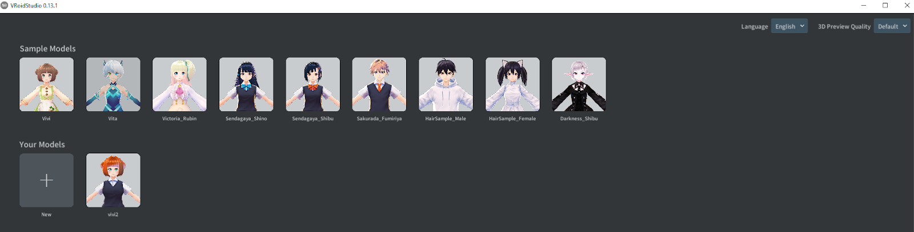
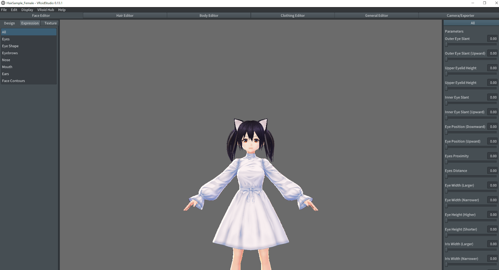
-
Customize the avatar as you please. As you customize your avatar, it’s important to follow the guidelines. Refer to the official VRoid Studio guides found here: https://vroid.pixiv.help/hc/en-us/sections/360000076642--Basic-Tutorials. In our example, we changed the hair and cat-ears colors.
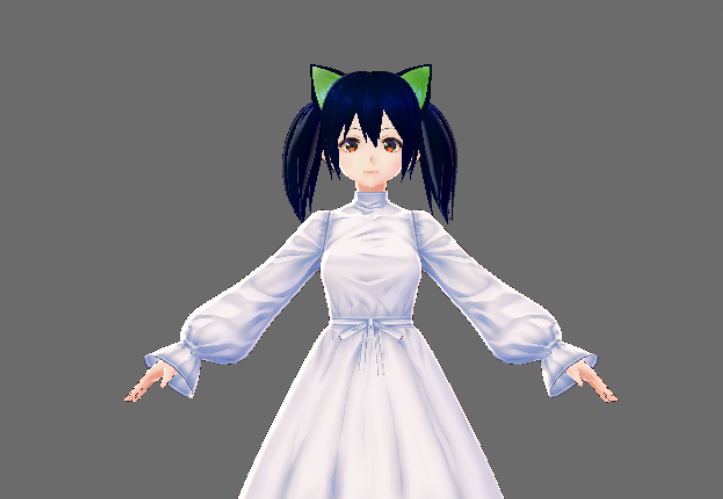
3. Export .vrm file by going to Camera/Exporter tab, selecting Export on the left-sidebar, and then clicking the Export button on the right-side inspector.
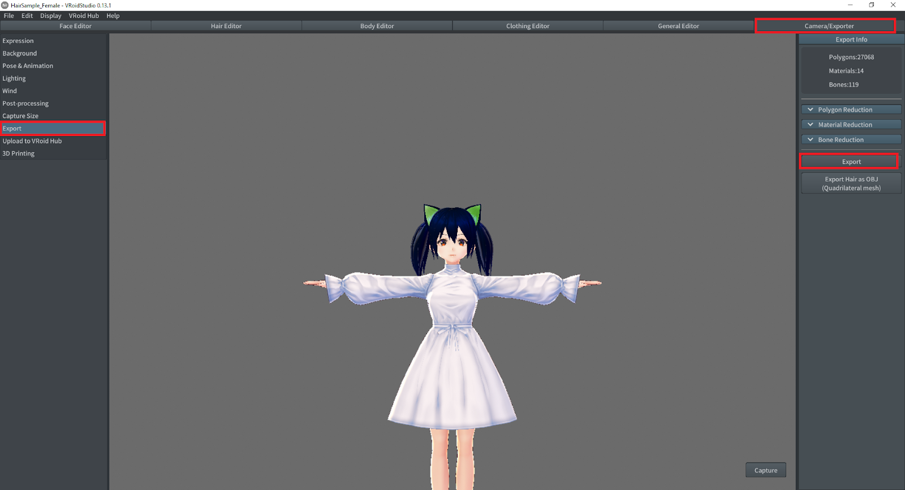
PRO TIP: To ensure that you can find your avatar in the next steps, it’s best to export the .vrm file to a separate folder without any other files.
-
Open Animaze Editor. If the Editor is not appearing in your library, don’t forget to select “tools” in the dropdown menu.

5. Go to Assets > Import 3D Objects. This will open a file explorer that supports .fbx and .vrm files. Search for your .vrm file and click open.
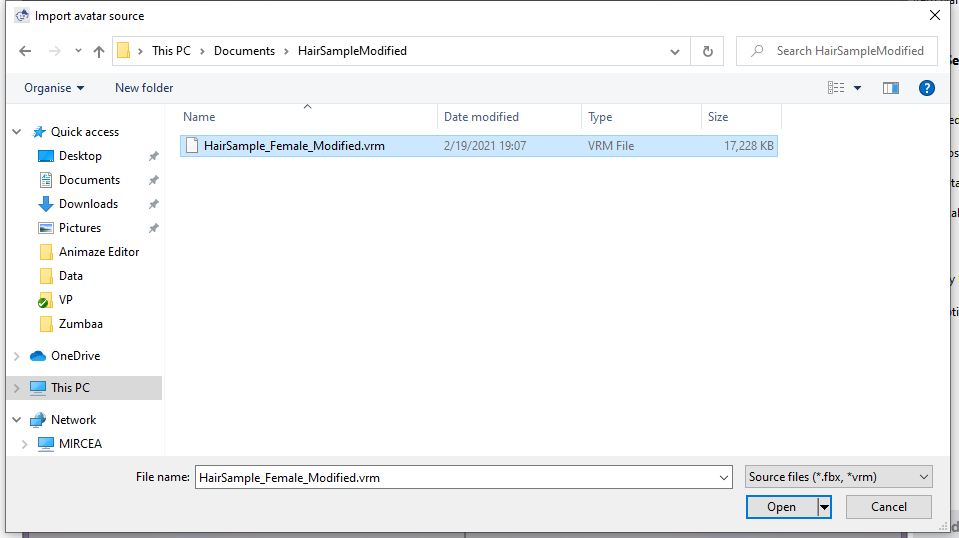
6. Click Import on the Importer window. Let the importer run; this may take a couple of minutes. If you click the screen while the importer runs,the app will not respond.
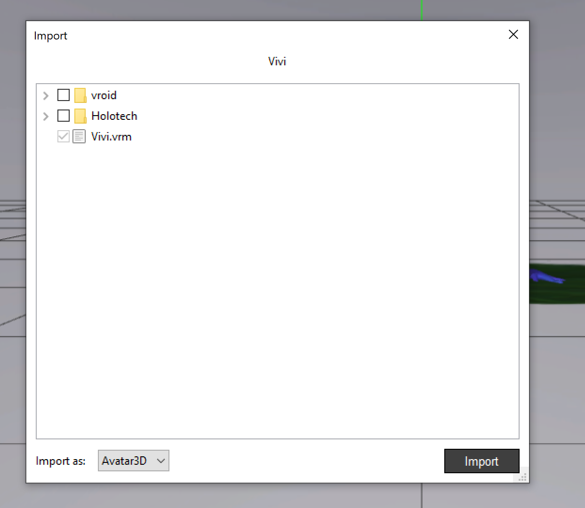
7. Close all import logging windows. Then you should see your model loaded into the Editor.
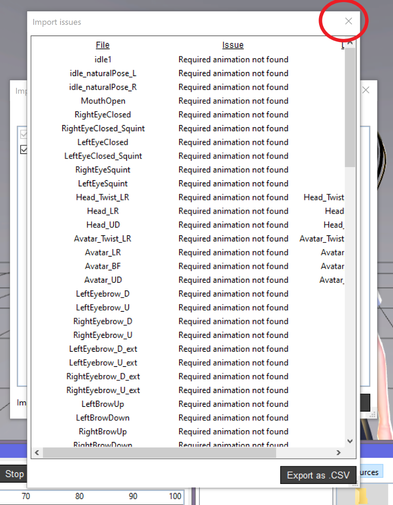
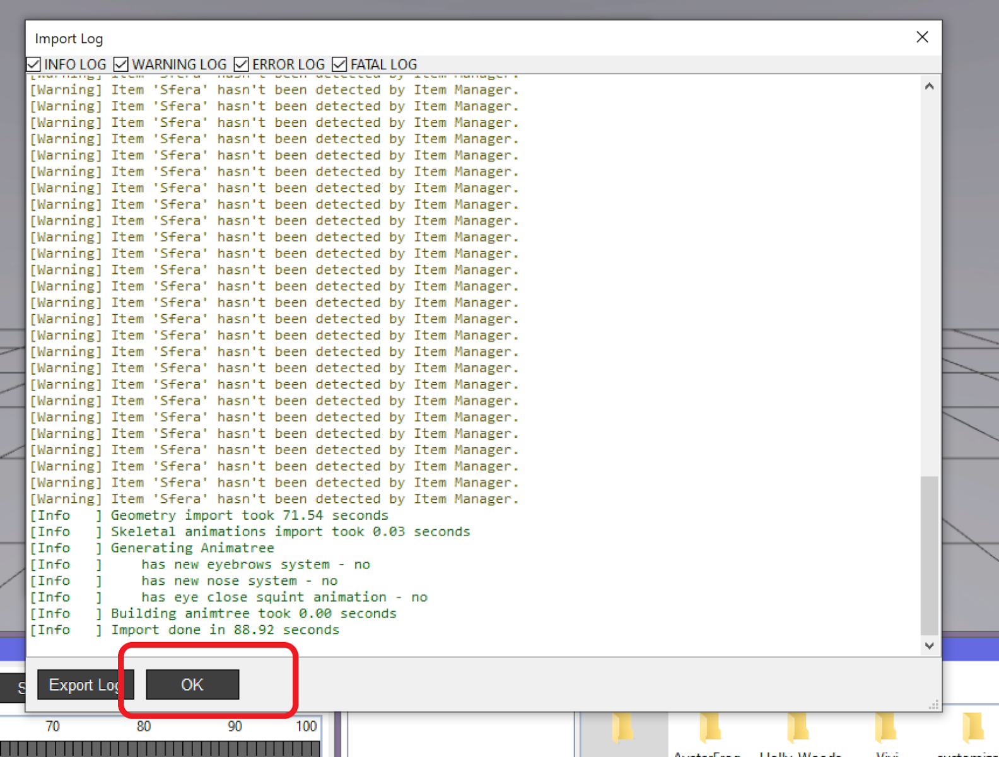
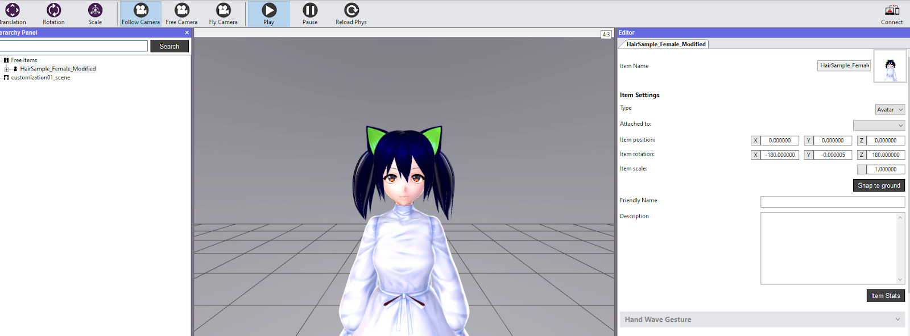
8. Right-click on the item in the Hierarchy Panel and select the Bundle option. This will create the .avatar file that’s ready to add to Animaze Desktop.
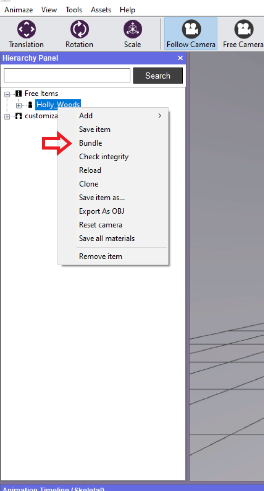

PRO TIPS: Take note of where you save your bundle. You will need to find the bundle in the next step. Also, you do not need to save the item before bundling.
-
Open the Animaze Desktop App. From the top bar menu, select Import > Import Avatar. Locate and select the .avatar file you’ve just created using the Animaze Editor. If you see a customization exit confirmation, select Don’t save.
Wooohooo! Your VRM model is now in Animaze!
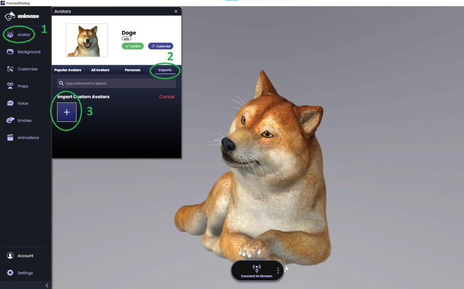
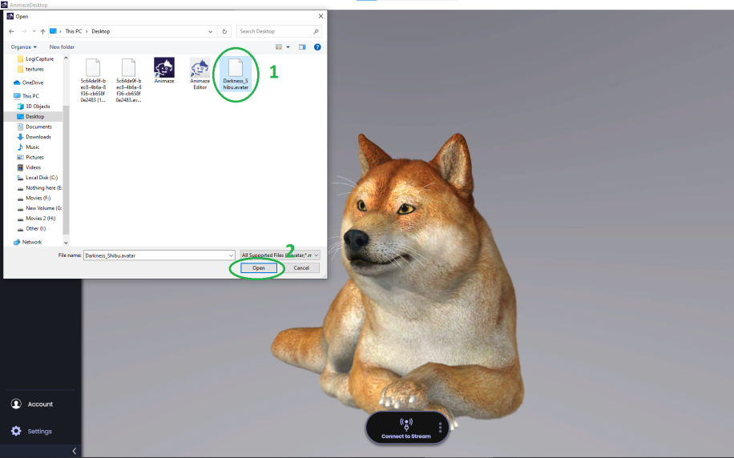
'
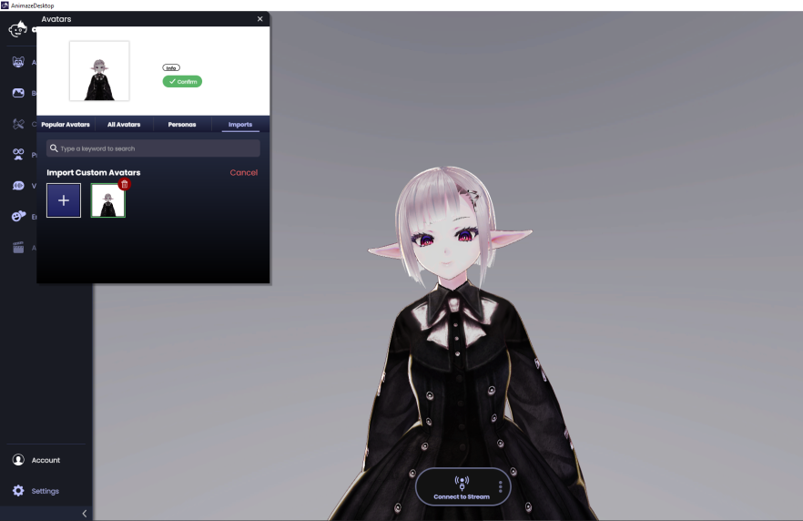
Share your creations with us on our Discord server here https://animaze.tv/discord!